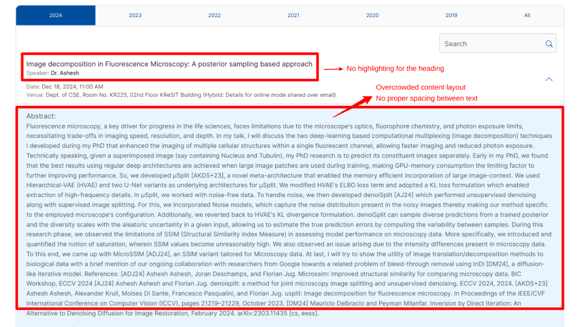

The page crams all details about the talk without using whitespace effectively. The title, speaker details, and abstract blend together, making it hard to read.
Important elements like the talk title and speaker name lack visual emphasis. Font size and weight do not distinguish them from secondary details.
The page layout is not mobile-friendly, leading to horizontal scrolling and overlapping content on smaller screens.
The overall design feels dated with basic HTML elements, no modern aesthetics, and limited interactivity.
The lack of a clear navigation structure for past and upcoming talks makes it cumbersome to browse the page efficiently.

https://www.seas.harvard.edu/calendar
Why? The events page is visually appealing, featuring a calendar view and individual event details. The use of cards for each event adds clarity and modern aesthetics.
https://www.eecs.mit.edu/news-events/events
Why? It provides clear navigation, uses responsive design, and emphasizes important details with bold typography and color distinctions.